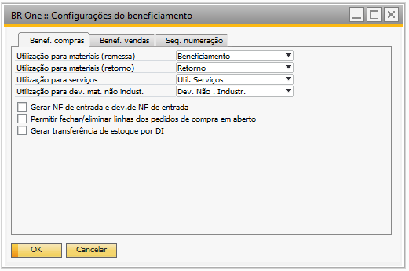
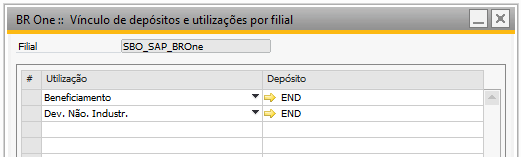
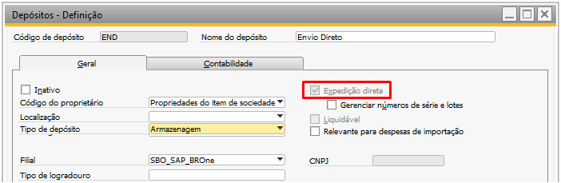
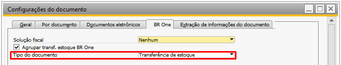
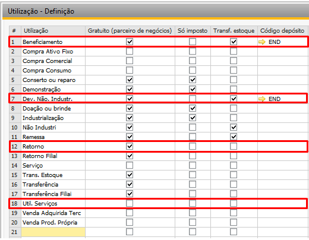

Configuração de utilização
Nesta tela podemos definir as utilizações para o processo de beneficiamento de compra.
{kind=link}
Bases multifiliais
Para bases multifiliais, é necessário realizar a configuração de vínculo de depósito e utilização. Essa configuração pode ser localizada no caminho Menu principal > Administração > Definição > Estoque > Vinculo de depósitos e utilizações por filial.
Lembrando que para as utilizações de Utilização para materiais(remessa) e Dev. Mat. Não Industrializados, deve ter um depósito de envio direto.
{kind=link}
Depósito de envio direto
Para configuração do deposito de envio direto é necessário que o campo Expedição direta esteja selecionado conforme a imagem abaixo:
{kind=link}
Utilização - Definição
As utilizações necessárias para o processo de beneficiamento de compra, são:
Utilização para materiais (remessa): Os campos PN Gratuito e Transf. Estoque, devem estar marcadas e configurado um depósito de envio direto.
Utilização para materiais (retorno): Somente o campo PN Gratuito, deve estar marcado.
Utilização de serviço: Os campos Transf. Estoque e Só Imposto, devem estar desmarcados.
Utilização para Dev. Mat. Não Industrializado: Os campos Transf. Estoque e PN Gratuito, devem estar marcados e configurado um depósito de envio direto.
{kind=link}
Permitir fechar/eliminar linhas dos pedidos de compra em aberto
Esse parâmetro tem a função de permitir fechar uma Ordem de Produção (OP) mesmo que exista pedidos de compra (Itens de serviços) em aberto, desde que não haja componentes pendentes de retorno ou remessas com quantidade pendente. Por outro lado, se o parâmetro estiver desmarcado, não será possível fechar a Ordem de Produção (OP).
Gerar transferência de estoque por DI
Só será permitido marcar essa opção se o parâmetro Tipo do documento nas configurações do documento estiver como Transferência de estoque.
{kind=link}
Ao marcar o parâmetro, a transferência de estoque passa a ser adicionada automaticamente sem que a tela de transferência seja aberta para o usuário. A relação abaixo mostra quais documentos geram a transferência e em quais momentos do processo:
Remessa: Devolução de NF de Entrada ou Devolução de Mercadoria (Gerar NF de remessa, Assistente de remessa e Vincular remessa avulsa).
Retorno: Nota Fiscal de Entrada ou Recebimento de Mercadoria (Assistente de retorno peças boas e não industrializadas).
Entrada de PA: Entrada de mercadoria (Entrada de Produto acabado)
Base simples
Para bases que não tenham filiais, o depósito é configurado na própria tela de Utilização – Definição, o campo Código depósito, deve ter um depósito de envio direto.
{kind=link}